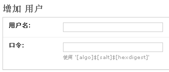
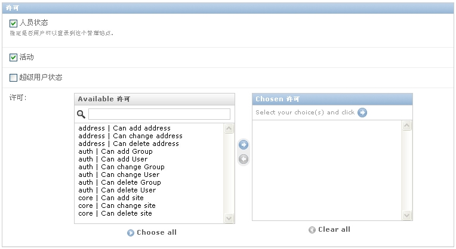

| 作者: | limodou |
|---|---|
| 联系: | limodou@gmail.com |
| 版本: | 0.1 |
| 主页: | http://wiki.woodpecker.org.cn/moin/NewEdit |
| BLOG: | http://www.donews.net/limodou |
| 版权: | FDL |
让我们再仔细看一下这个通讯录，我们知道，如果想增加新的记录，一种方法是通过 admin 界面，这个已经由 Django 自动为我们做好了。我们还可以批量导入，这个是我们实现的。但是这里有风险，为什么？如果什么人都可以导入这可是件不好的事，那么怎么办： 加权限控制 。
Django 自带了一个权限控制系统，那么我们就用它。因此先让我们简单地了解一下 Django 中的权限。同时我希望只有特殊权限的人才可以做这件事情，在前几讲中我们一直使用超级用户，但这并不是个好的习惯。因此让我们先创建个个人用户吧。
使用 admin 用户进入管理界面 http://localhost:8000/admin
在 Auth 下有用户一项，点击添加按钮进入添加界面，还挺复杂的。在这里提示是黑体的字段是必输项，其实只有两项是需要我们输的：用户名和口令。用户名好办，口令怎么还有格式呢：
格式为： '[algo]$[salt]$[hexdigest]'
这里 algo 是算法的名字，可以是 md5 或 sha1 算法。 salt 是一个随机数，它将用来参与密码信息的生成。 hexdigest 是将 salt +原始的密码 计算它的摘要算法得出来的东西。从 User authentication in Django 文档来看，并没有仔细地解释这个事情。我们需要这样做吗？但实际的情况要好，也要复杂的多。
我们其实并不一定需要这样做， Django 在做口令检查时，一旦发现口令串不是组织成以 $ 分隔的形式，它会先认为是 md5 算出的结果，然后如果比较成功则自动使用 sha1 重新计算，然后保存到数据库中去。而这一过程是自动进行的。因此，最简单的就是按文档上那样，使用 Python 来生成一个 md5 的口令摘要码，如:
>>> import md5
>>> md5.new('test').hexdigest()
'098f6bcd4621d373cade4e832627b4f6'
上面就生成了一个口令为 test 的 md5 的摘要码。然后把它拷贝到输入口令的地方即可。然后在我们第一次成功验录后， Django 会自动替我们改成三段的格式，而我们不需要知道。不过，对于一般户其实不用担心，因为他们没有机会创建自已的用户，这一切都是管理员的工作，一般用户只是在管理员设定好口令之后，他们登录，然后可以修改自已的口令。所以真正麻烦的是管理员。我不知道 Django 为什么会这样，只是看到邮件列表中的确有人在讨论这个问题，以后再关注吧。
知道了口令应该如何生成(md5计算)，那么我们只要填入用户名，口令就行了。
Note
人员状态检查框如果不打勾，则你的用户也无法使用，因为他不能登录。也许你担心，如果打勾了，那不是他就能做好多事了吗？其实不然。在 Django 中，创建一个 app 之后都有一些基本的权限会自动生成，而这些除了超级用户，它们是不会自动赋给某个用户的。因此如果管理员不给某个用户关于 app 的使用权限，那么这个用户根本没有办法操纵这些 app ，甚至连看都看不到(大家自已试一下就知道了)。这样他能够做的只是登录，但这也许就够了，有时我们需要的就是一个用户的合法身份，而不是一定要他能做些什么。
request 对象提供一个 user 对象，你可以根据它来判断当前用户的身份，所属的组，所拥有的权限。我们可以在 view 代码中进行用户身份的检查。
现在我的想法是：限制特殊用户来做这件事。首先我可以在 settings.py 中设定这个用户名，然后在 view 中检查当前用户是否是 settings.py 中设定的用户。
在最后增加:
UPLOAD_USER = 'limodou'
Note
这里请把 limodou 改成你想要的名字。要注意，在后面的测试中你需要按这里指定的名字创建一个用户。
#...
from django.conf import settings
def upload(request):
if request.user.username != settings.UPLOAD_USER:
return render_to_response('address/error.html',
{'message':'你需要使用 %s 来登录！' % settings.UPLOAD_USER})
#...
我们从 django.conf 导出了 settings ，然后在 upload() 中判断当前用户名是否是等于 settings.UPLOAD_USER 这个用户名，如果不是则提示出错信息。否则继续处理。
好象一切都挺简单，但这里还有一个大问题：能不能自动导向一个用户注册的页面去呢？上面的处理是需要用户进入 admin 管理界面进行注册后，再进行操作。如果没有注册就上传文件，则只会报错。这里我希望实现：如果用户没有注册过，自动显示一个注册页面。如何做呢？
文档中提出了一个方法:
from django.views.decorators.auth import login_required
@login_required
def my_view(request):
# ...
这个方法我试过了，但失败了。主要的原因是：如果你还没有注册，它会自动导向 /accounts/login/ ，而这个URL目前是不存在的。在我分析了 login.py 代码之后，我认为它只是一个框架，并不存在 Django 已经提供好的模板可以直接使用，如果要使用它是不是需要我自已去建一个可以用的模板？没办法，我分析了 admin 的代码之后，最终找到了一种替代的方法:
from django.contrib.admin.views.decorators import staff_member_required @staff_member_required def upload(request):
admin 已经提供了这样的一个方法： staff_member_required 。它允许我使用 admin 的登录画面。
Note
注意 @staff_member_required 是 2.4 中的 decorator 的用法。如果希望在 2.3 上也可以运行，请改一下。
一旦把上面的代码补充完整，代码是这样的:
#coding=utf-8
# Create your views here.
from newtest.address.models import Address
from django.http import HttpResponse, HttpResponseRedirect
from django.shortcuts import render_to_response
from django.template import loader, Context
from django.conf import settings
from django.contrib.admin.views.decorators import staff_member_required
@staff_member_required
def upload(request):
if request.user.username != settings.UPLOAD_USER:
return render_to_response('address/error.html',
{'message':'你需要使用 %s 来登录！' % settings.UPLOAD_USER})
file_obj = request.FILES.get('file', None)
if file_obj:
import csv
import StringIO
buf = StringIO.StringIO(file_obj['content'])
try:
reader = csv.reader(buf)
except:
return render_to_response('address/error.html',
{'message':'你需要上传一个csv格式的文件！'})
for row in reader:
# objs = Address.objects.get_list(name__exact=row[0])
objs = Address.objects.filter(name=row[0])
if not objs:
obj = Address(name=row[0], gender=row[1],
telphone=row[2], mobile=row[3], room=row[4])
else:
obj = objs[0]
obj.gender = row[1]
obj.telphone = row[2]
obj.mobile = row[3]
obj.room = row[4]
obj.save()
return HttpResponseRedirect('/address/')
else:
return render_to_response('address/error.html',
{'message':'你需要上传一个文件！'})
def output(request):
response = HttpResponse(mimetype='text/csv')
response['Content-Disposition'] = 'attachment; filename=%s' % 'address.csv'
t = loader.get_template('csv.html')
# objs = Address.objects.get_list()
objs = Address.objects.all()
d = []
for o in objs:
d.append((o.name, o.gender, o.telphone, o.mobile, o.room))
c = Context({
'data': d,
})
response.write(t.render(c))
return response
基本没有变化，主要是开始的一些地方增加了用户权限的处理。
在点击上传之后，如果没有注册会进入登录画面。如果已经注册，但用户名不对，则提示一个出错信息。不过，一旦注册出错，没有提供自动重新登录的功能，因此你需要进入 admin 管理地址，然后注销当前用户，再重新上传或先用正确的用户登录。因为是个简单的 app ，没必要做得那么完善。同时还存在的一个问题是，如果你没有注册过，那么点击上传按钮后，将进入登录画面，但如果成功，你上传的文件将失效，需要重新再上传。那么解决这个问题的一个好方法就是：不要直接显示上传的东西，而是先提供一个链接或按钮，认证通过后，再提供上传的页面，这样可能更好一些。
在 User authentication in Django 文档中还有许多的内容，如权限，在模板中如何使用与认证相关的变量，用户消息等内容。